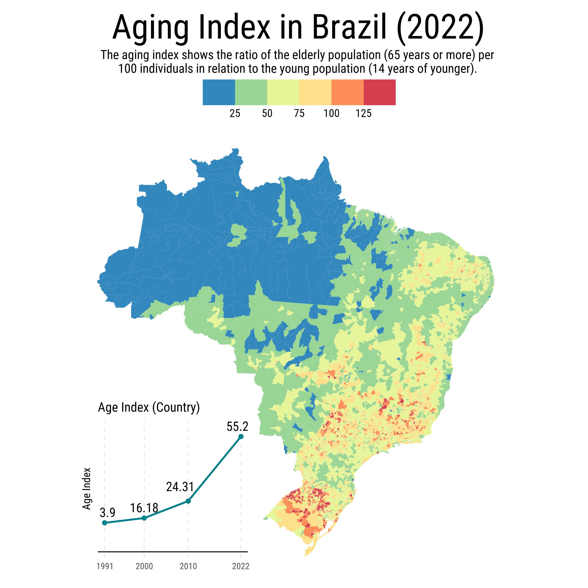

Envelhecimento no Brasil
O futuro demográfico do Brasil, em grande parte, já é conhecido. Assim como no resto do mundo, a combinação de queda de taxa de fecundidade e aumento de expectativa de vida implica no envelhecimento da população. Pelo índice de envelhecimento1, a razão entre idosos e jovens, vê-se como esta tendência já é realidade em boa parte do território brasileiro.

No começo dos anos 2000 apenas o Rio Grande do Sul e uma parte do Sudeste apresentavam os sinais do envelhecimento. Já no Censo seguinte, em 2010, o processo se expandiu, alcançando praticamente todo o Sul e Sudeste, além de municípios isolados no interior do Nordeste e Centro-Oeste.
O salto significativo ocorreu na década seguinte. Em 2022, vê-se o envelhecimento também do interior do Brasil. Particularmente notável é a expansão do fenômeno pelo interior de Minas Gerais, São Paulo e pela região Sul, onde algumas áreas já atingem os índices mais elevados da escala.
A aceleração do envelhecimento reflete também movimentos migratórios internos, com adultos saindo de municípios menores em busca de oportunidades nos grandes centros urbanos, deixando para trás uma população proporcionalmente mais idosa. Este fenômeno apresenta um grande desafio para o Brasil, onde muitos municípios já enfrentam dificuldades de arrecadação.
Padrões regionais
O mapa abaixo mostra em maiores detalhes o índice de envelhecimento nas cidades brasileiras. Os dados são do mais recente Censo do IBGE. Vale lembrar que valores maiores do que 100 indicam que há uma proporção maior de idosos do que jovens.
O índice de envelhecimento brasileiro apresenta padrões regionais distintos em 2022, refletindo diferentes estágios da transição demográfica. O indicador nacional evoluiu de 3,9 em 1991 para 55,2 em 2022, evidenciando a aceleração do processo de envelhecimento populacional.

Rio Grande do Sul é o estado mais envelhecido do Brasil
O Rio Grande do Sul registra os índices de envelhecimento mais elevados do país, com valores superiores a 100 em grande parte do território. O estado apresenta estrutura etária similar à de países desenvolvidos, com envelhecimento particularmente intenso no interior. O processo resulta da combinação de baixa fecundidade histórica, migração de jovens e características socioeconômicas específicas.
Em muitos dos municípios do estado, o número de óbitos já supera o número de nascimentos, indicando que muitas cidades devem enfrentar redução na sua população nos próximos anos.
De maneira geral, o Sul e Sudeste são as regiões mais envelhecidas do país. A exceção notável é Santa Catarina. O estado mostra envelhecimento moderado e geograficamente variado graças à dinâmica econômica diversificada, com polos industriais e tecnológicos que atraem população jovem. Cidades como Florianópolis, Joinville e Blumenau funcionam como centros de atração demográfica, mantendo a estrutura etária equilibrada.
A transformação demográfica do Nordeste
O semiárido nordestino, tradicionalmente caracterizado por alta taxa de fecundidade agora mostra sinais de envelhecimento. Municípios do interior da Bahia, Pernambuco e Ceará registram índices comparáveis a regiões tradicionalmente envelhecidas. O envelhecimento do Nordeste é reflexo também da queda na taxa de fecundidade
Estados como Pernambuco, Paraíba, Rio Grande do Norte e Ceará apresentam extensas áreas com índices entre 75 e 100.
Em quase metade das cidades do RS, há mais idosos do que jovens
No Rio Grande do Sul, quase metade dos municípios tem mais idosos do que jovens. O gráfico abaixo mostra a proporção de cidades onde há mais idosos que jovens, isto é, onde o IE é maior do que 100. Isto acontece, em parte, pois há muitos municípios pequenos no interior do estado que sofrem com a emigração de jovens. Vale notar que todos os estados do Sul e Sudeste aparecem no ranking.
Sul e Sudeste lideram envelhecimento
Considerando a população total de cada estado, ao invés da proporção de municípios, o Rio Grande do Sul continua no topo da lista. O ranking continua dominado por estados do Sul e Sudeste, mas vê-se como também o nordeste está envelhecendo.
Apenas a região Norte e alguns estados do Centro-Oeste apresentam índices baixos.
Posts Relacionados
Footnotes
Formalmente, o índice de envelhecimento, \(IE\), é definido como a razão entre a população idosa (\(p_{idosa}\)), com 65 anos ou mais e a população jovem (\(p_{jovem}\)), com 14 anos ou menos. \(IE = 100\frac{p_{idosa}}{p_{jovem}}\)↩︎